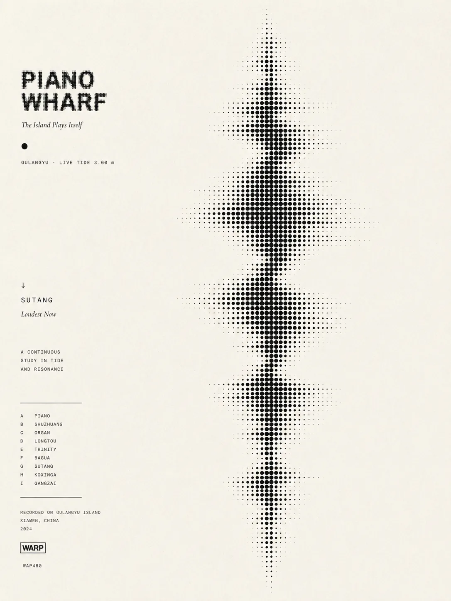
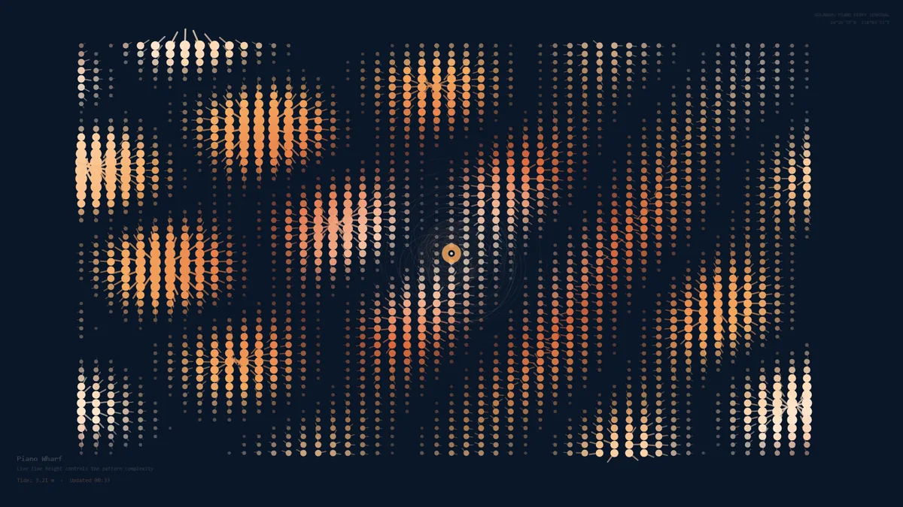
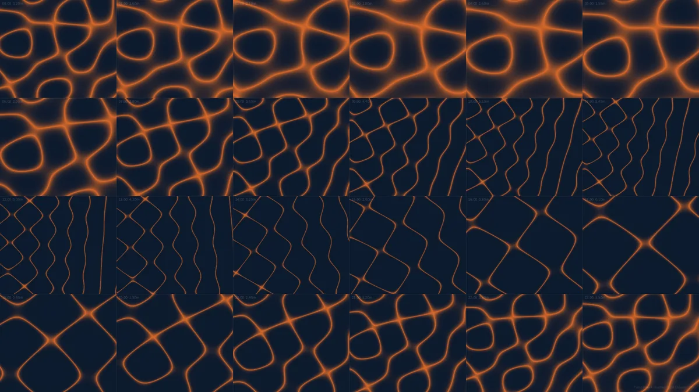
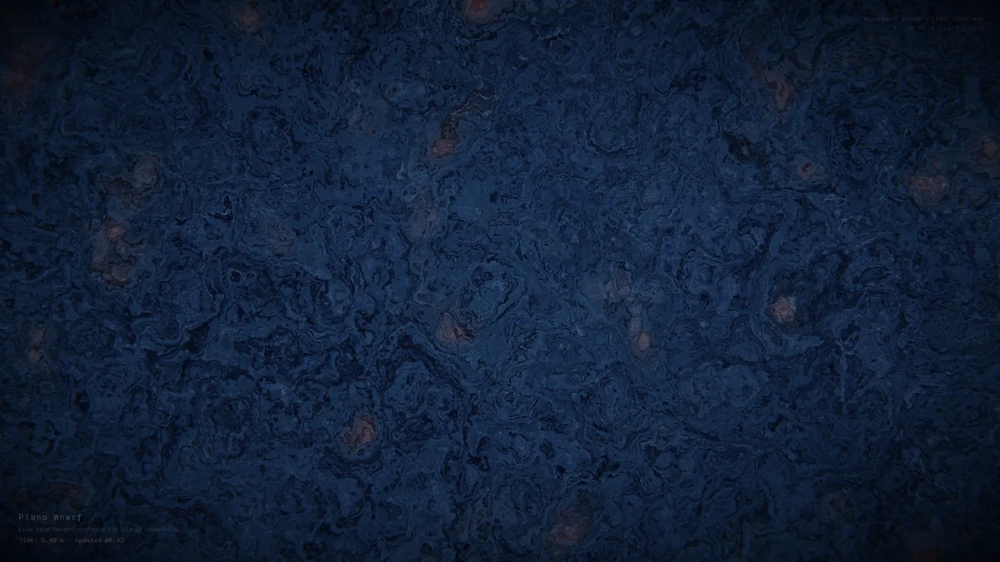
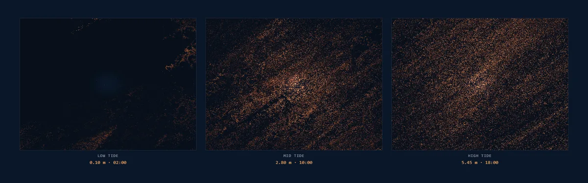
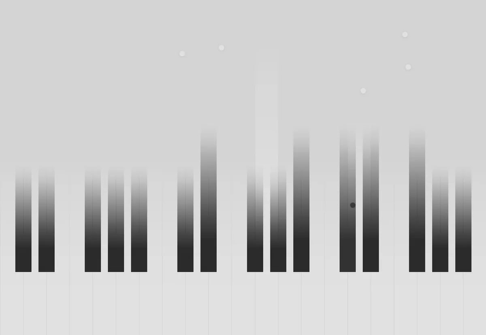
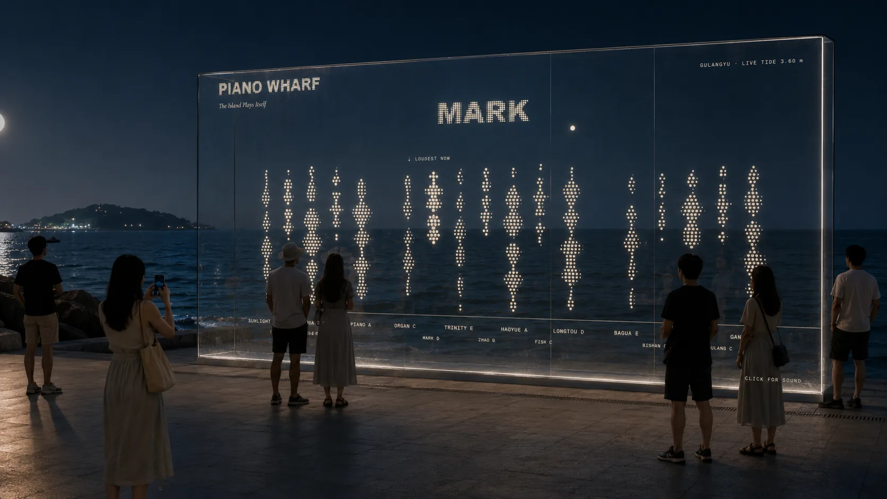
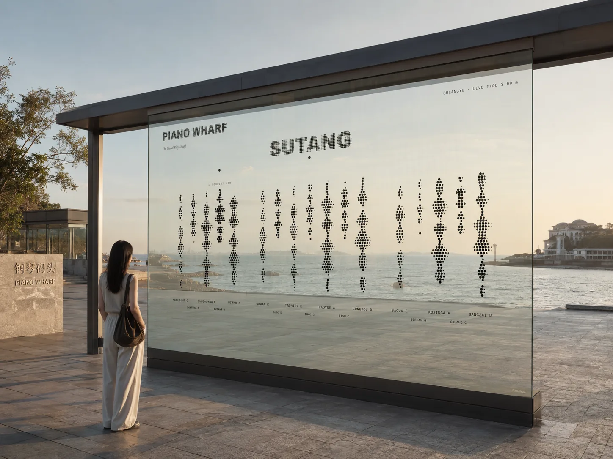

A data-driven public graphic, 2026
Piano Wharf
Gulangyu is the Piano Island, car-free, reached only by ferry. In the ferry hall the island plays itself: the live tide strikes keys built from the island’s own place-names, and the name that rings loudest is where to walk next.
- Year
- 2026, June
- Role
- Brand design and code. Research and the presentation by Congrui Wang.
- Team
- Two: Kaiqi Feng and Congrui Wang
- Course
- Data-driven Public Graphic, Design Technology 2 · College of Design and Innovation, Tongji University
- Status
- Course submission, June 2026. The installation is a proposal.
The day, by the hour
01The idea
One field of dots. Three readings: the tide, the keys, the notes.
The whole identity is one visual atom, a black dot, whose density carries meaning. The same dots are at once the tide, a waveform; the keys, columns side by side like a keyboard; and the notes, each column tagged with the pitch it plays. Sea, sound, type, place, sea.
- Tidea vertical waveform silhouettelive tide height
- Keyscolumns standing side by sideeach column is one place
- Noteseach column tagged with its pitcha C-major pentatonic: C D E G A

The wordmark is cast from the same dots as the tide: rasterised, then re-rendered on the halftone grid, so logo and artwork are one material. Two typefaces do the rest: DM Mono for data and labels, Cormorant Garamond italic for the one line that speaks. No colour, by conviction: density does the work colour usually does.
02The tide plays
What rises in the water rises on the wall.
In the sketch one number does the work: the tide height, read every sixty seconds. Above mid-tide the coastal places grow dense and one of them is held, large; below it the inland courtyards take over. Falling dots land on keys, each key sounds its note, and the held name changes every few seconds within the set.
- Tide height0.10 – 5.45 mabove mid-tide, 2.78 m: the coastal places dense and recommended; below it, the inland courtyards
- Tide phaserising / fallingin the system, a finer reading of the same switch (mapped, not in the sketch)
- Ferry frequency0 – 6 an hourtempo: how often a drop falls (mapped in the system, not in the sketch)
- Pedestrian flow0 – 120 a minutehow many keys are alive (mapped in the system, not in the sketch)
The wall is mostly still. Columns breathe over five to eight seconds; a drop strikes a key and the column swells as the note sounds; at most four notes at once, and at least thirty per cent silence even at the peak.
03The process
Five sketches before the dots.
The halftone came last. Before it, a console that needed a hand, a grid that could not move, a shader that was all surface, a public graphic in orange that any place could have shown, and a keyboard of solid type that was heavy.

City DJ consoleA mixing console for visitors; a flow network as output. Needed interaction, too complex for a five-second read.

Tidal Chladni gridTwenty-four hours of Xiamen tide as twenty-four Chladni plates, in Processing. A poster, not a live surface.

Domain warpA GPU shader, seven octaves of noise, the tide as warp amplitude. Rich, but any place could have made it.

Three tide states, in orangeThe warp version at low, mid and high tide, with piano notes from Tone.js. A data graphic, not yet the island’s mark.

A keyboard of solid typePlace-names as upright keys. It read as a piano, but type and instrument stayed separate, and it was heavy. The dots fused them.
04The site
A wall in the waiting hall, read at five to eight metres.
Gulangyu South Ferry Terminal, Xiamen: the island’s one door, where everyone waits, idle, between places. The proposal projects the sketch on the hall’s south concrete wall, six by three and a half metres, from a local computer refreshing the tide every sixty seconds, with a ceiling speaker below conversation level. Night is the strongest viewing condition, which is one reason the identity is density, not colour.


What this record can't say
- The tide reading in the prototype is simulated from a 24-hour table, structured like a live endpoint; no live station was connected.
- The projection is a proposal. Nothing was installed, and the viewing-distance and light tests in the document were simulated at screen scale.
- The five-second readings came from a few people shown mockups, not from anyone at the terminal.
- The images of the proposal in place are generated, not photographs; the wall in them is not the terminal’s.
- Ferry frequency and pedestrian flow are mapped in the system on paper; the sketch takes only the tide height.
- In the sketch the tide height switches between two sets of places at mid-tide; the density does not grow continuously with the height, as the identity system describes it.
AI use
Parts of the code, the halftone and waveform maths and the Canvas and Tone.js pipeline, were written with AI assistance and checked by hand at the boundary values. The two images of the proposal in place were generated with an AI image tool.
Details
- Title
- Piano Wharf. The island plays itself: a city-brand signal for Gulangyu’s ferry terminal, drawn by the tide.
- Medium
- A generative identity: a browser sketch (Canvas, Tone.js) that turns the tide height into a field of dots · a visual identity system · a five-part document · a proposal for a projection in the terminal’s waiting hall
- Skills
- Identity design · generative graphics · creative coding · sound mapping
- Tools
- JavaScript Canvas · Tone.js · Processing for the earlier iterations · DM Mono and Cormorant Garamond in the identity
The film is the final sketch’s own output, recorded frame by frame for this page: the tide follows the prototype’s 24-hour table, two and a half seconds an hour, and the sound is the notes the sketch played, rendered with its own synth and reverb, level-matched. The poster is my own. The iterations are the earlier sketches’ output. The two images of the proposal in place were generated with an AI image tool. The research figures and quotes in the submission are Congrui Wang’s and are not repeated here.